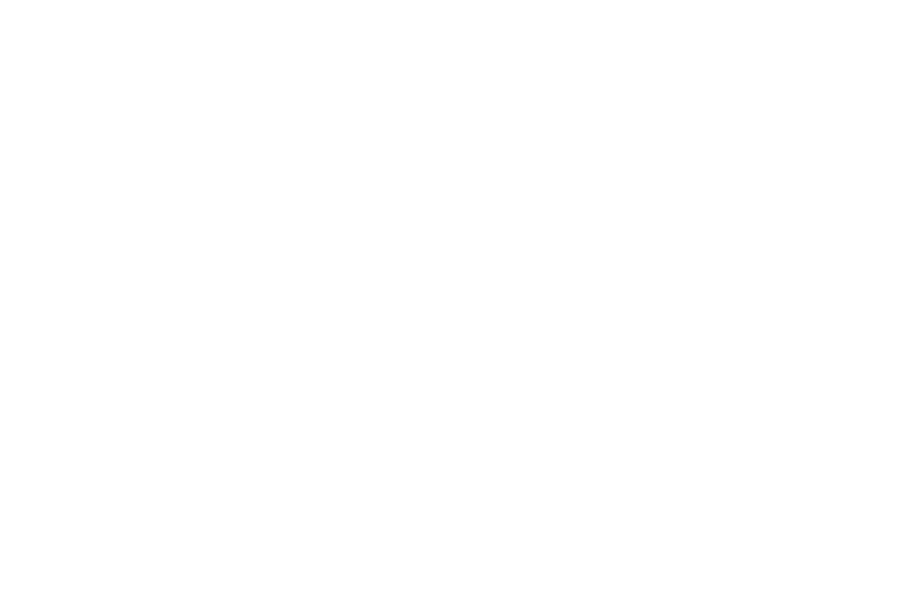
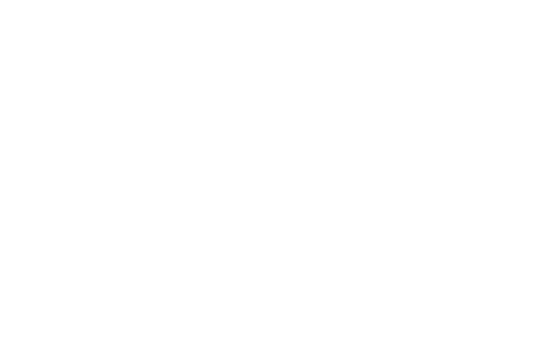
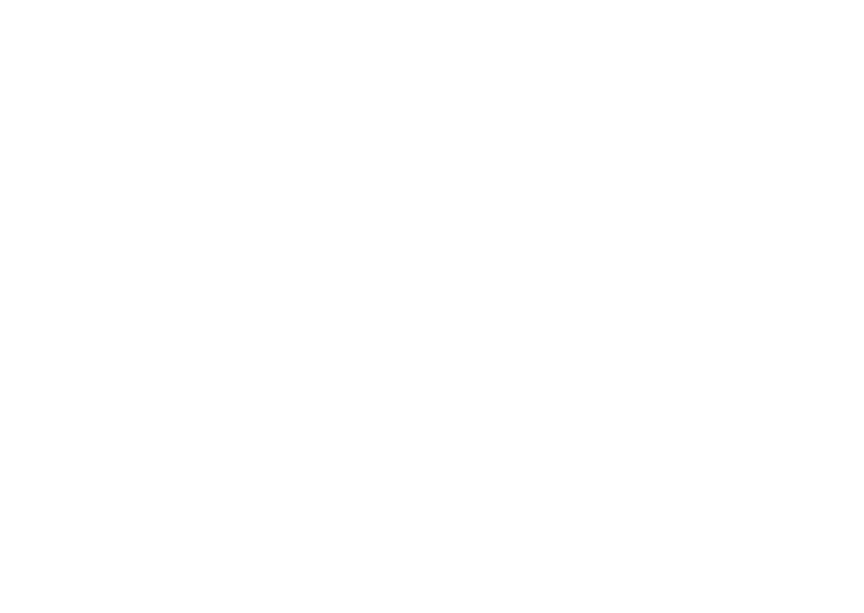

Plate 03Instrument 01 • Live
San Francisco • Human-Agent Interaction
See the first instrument
Or write to the lab




Field
#1 Surface

What is the best surface for a person to think, decide and review once machines do most of the drafting?
#2 Judgment

Can a model learn a person's judgment from the collaboration itself, rather than from anything they sit down and write out?
#3 Many Hands

How do several people and several agents share one document without anyone losing track of who did what?
#4 Trace

Every edit, every comment, every acceptance and every reversal is a trace of judgment. We keep all of them.
#5 Review

If a machine wrote most of it, the reading matters more than the writing. Every change stays reviewable.
#6 Series

Sundial is the first instrument, not the last. The plinths beside it are waiting.